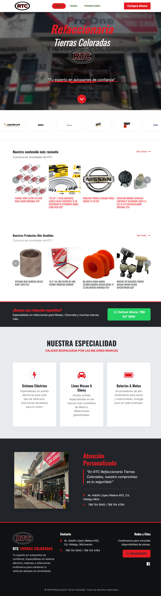
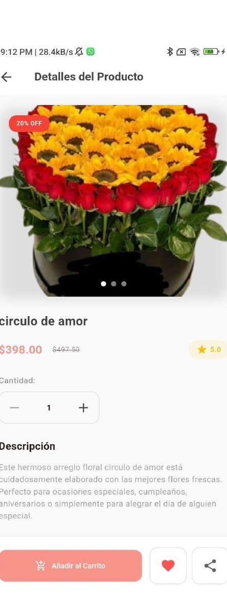
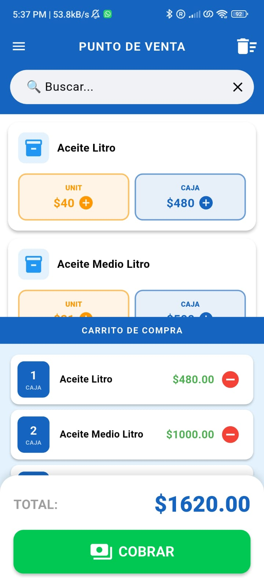
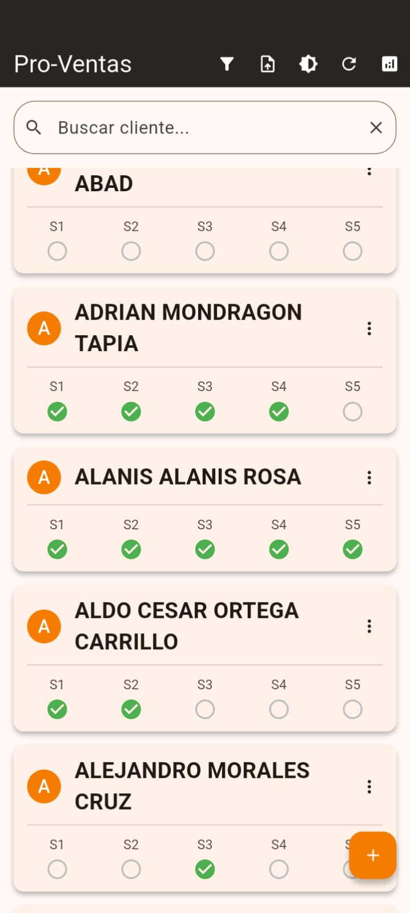
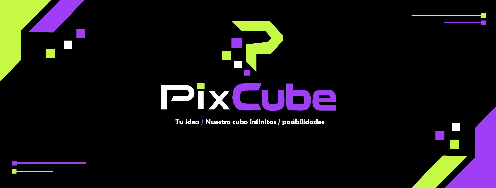
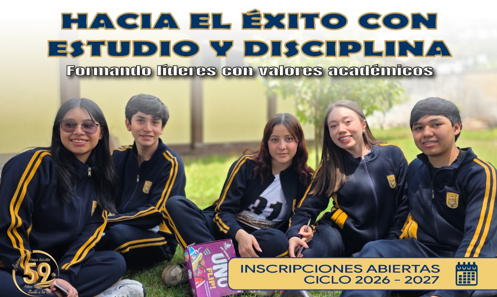

01 — E-COMMERCE · APP + WEB
27
↗Una experiencia de compra multiplataforma que conecta a las personas con el lenguaje de las flores.
DESARROLLO DE SOFTWARE · DISEÑO DIGITAL
Soy Jonathan Tello, desarrollador y diseñador. Convierto necesidades de negocio en aplicaciones, experiencias web y automatizaciones claras y funcionales.

RTC · COMERCIO WEB



IDENTIDAD · PIXCUBE01 / TRABAJO SELECCIONADO
Una mezcla de ingeniería, diseño y curiosidad.
Hecho para personas y negocios reales.
Una experiencia de compra multiplataforma que conecta a las personas con el lenguaje de las flores.
Catálogo de mobiliario ecológico con una experiencia pensada para descubrir cada pieza.
Ventas e inventario en el bolsillo, con impresión térmica Bluetooth en el punto de venta.
Seguimiento simple y centralizado para que ningún pedido de la semana se quede atrás.
Implementación de ERP y presencia web para una refaccionaria, conectando operación y catálogo.
Flujos para sondeo de precios, alertas, tickets y sincronización de información.
Un sistema visual vibrante para una marca que une código, ideas y diseño.

08 — DISEÑO & VIDEO↗Contenido visual y audiovisual para comunicar la vida y comunidad escolar.
02 / UN POCO SOBRE MÍ
Estudio Ingeniería en Tecnologías de la Información y Comunicaciones. Me gusta moverme entre el código y lo visual: entender un problema, ordenar sus piezas y convertirlo en una solución clara.
Trabajo con herramientas de IA como copiloto para explorar ideas y acelerar tareas, cuidando siempre las decisiones y el resultado final.
Descargar CV ↗Flutter · Dart · JavaScript · HTML · CSS · Python · MySQL
Odoo · n8n · Webhooks · APIs · XAMPP
Illustrator · Photoshop · Identidad · Contenido audiovisual
Ingeniería en TICs
Universidad · 2022 — 2026
La tecnología importa cuando hace
que algo cotidiano funcione mejor.
03 / SIGUIENTE PASO
¿Tienes una oportunidad para mi perfil? Me encantará conversar.
WhatsApp · +52 786 111 6178 ↗¿Prefieres correo? Mándame un correo a Hanstello95@gmail.com